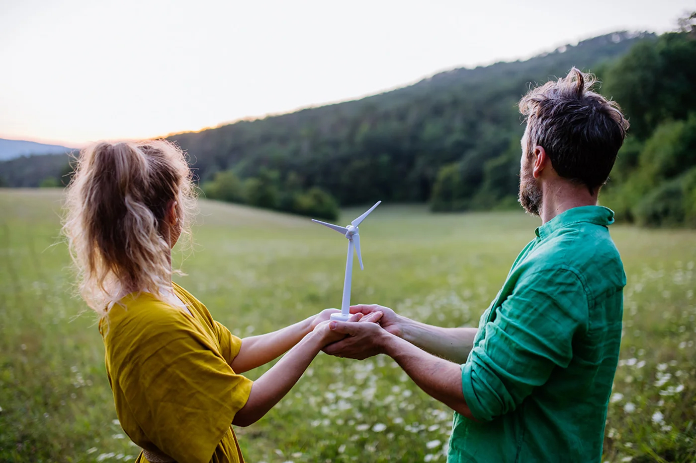

Små vaner med store forandringer
Du behøver ikke at gøre alting rigtigt for at gøre en forskel. Det vigtigste er at starte. Når vi kan foretage små ændringer i vores dagligdag, kan vi forvandle dem til store forandringer.,
Hvad er en grøn vane?
En grøn vane er noget, vi gør igen og igen, som er skånsomt for det miljø, vi lever i. Det kan være at slukke lyset, når vi forlader rummet, tage vores egne poser med i butikken eller bruge rester fra aftensmaden i går aftes.

Hvorfor er det vigtigt?
Naturen har stor betydning, og alt, hvad vi bruger, spiser og smider ud, har en indvirkning på naturen. Hvis vi bruger mindre og bruger tingene bedre, passer vi bedre på klimaet og miljøet. Dette er godt for både os selv og de kommende generationer.
Hvordan og hvor skal vi starte?
Vi behøver ikke at købe nye ting eller gøre alting på én gang. Vi vælger én vane og prøver den i en uge. Når det bliver nemt for os, kan vi vælge en ny vane. På den måde bliver det en del af vores dagligdag uden at det føles svært.